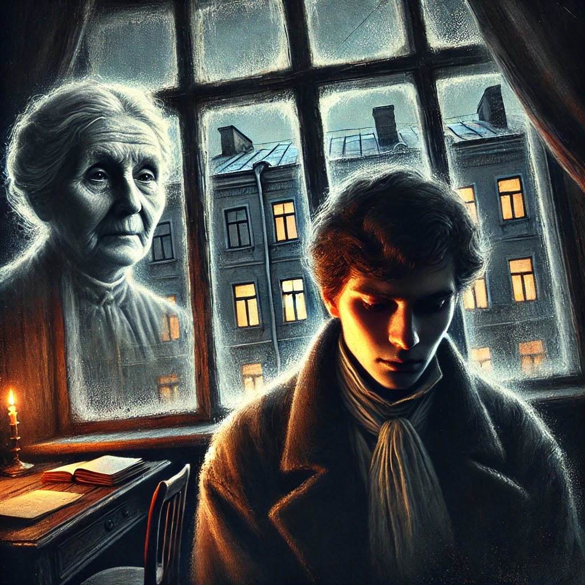

죄와 벌
목차
작가
표도르 도스토옙스키
출판일
1867년
감상평에 대한 AI그림
도스토옙스키의 죄와 벌은 인간 내면의 갈등과 도덕적 고민을 깊이 탐구한 작품이다. 라스콜니코프의 범죄와 그에 따른 심리적 고통을 통해 죄의 본질과 속죄의 의미를 묻는다. 사회적 부조리와 인간의 이중성을 날카롭게 그려내며, 인간 본성에 대한 철학적 질문을 던진다. 복잡한 심리 묘사와 서스펜스 넘치는 전개가 몰입감을 높이며, 끝내 구원과 희망의 메시지를 전달한다.

감상평에 대한 AI평가
라스콜니코프는 죄책감에 시달리며 내적으로 붕괴하고, 결국 속죄를 통해 구원의 가능성을 모색하며, 이를 통해 인간이 본질적으로 선과 악을 모두 지닌 존재임을 보여준다.
✨ guilt(죄책감) – 라스콜니코프는 살인을 저지른 후 자신의 행위를 정당화하려 하지만, 점차 심리적 고통과 불안에 시달린다. 그의 죄책감은 단순한 감정을 넘어 도덕적 갈등과 인간 본성의 복합성을 드러낸다.
✨ expiation(속죄) – 작품 후반부에서 라스콜니코프는 자신의 죄를 인정하고 자수하며 속죄의 길을 걷는다. 이는 단순한 법적 처벌을 넘어선 구원의 과정이며, 인간이 죄를 짓더라도 새로운 삶을 살아갈 가능성이 있음을 보여준다.
✨ human nature(인간 본성) – 선과 악 사이에서 갈등하는 라스콜니코프의 모습은 인간이 본질적으로 이중적인 속성을 지닌 존재임을 나타낸다. 도스토옙스키는 이를 통해 도덕과 양심의 본질에 대한 철학적 질문을 던진다.